田野紀錄
以腳步踏查現場，在巷弄間讀懂歷史
跟著老師與在地前輩的腳步，穿過北宜路、國校路與新店後街，眼前所見不只是街屋、坡道與河岸風光；那些被指認的地名、被追問的舊路、尚待釐清的年代，也彷彿在陽光下重新浮現。這份紀錄留下了現場的聲音與片刻凝神，也留下我們面對地方時的謙卑：有些往事需要靠近一點聽，有些線索要多走幾回，才會在平常經過的街景裡，慢慢看見過去留下的影子。
翁東源輕便車路
淑華老師班級 ｜ 民國 115 年 5 月 7 日
一、基本紀錄資訊
紀錄日期：民國 115 年 5 月 7 日（星期四）上午 9 時 00 分 至 12 時 00 分
活動參與者：淑華老師班級學員：玉芳、性娟、培珍、孜人、玉玲、Abby、淑美、玉華、淑敏、燦勝
紀錄類別：
☑ 人物（帶路指導翁先生、國校里啟川大哥、在地里長）
☑ 商店（論華火柴工廠遺址、王家包子店）
☑ 老建築（日治教職員宿舍、馬偕教會）
☑ 自然景點（彎潭坑口）
☑ 特色景觀（輕便路、地下水文變遷、摩天嶺地形）
☑ 史蹟（明治煤礦遺址、和美煤礦遺址、舊市鎮中心、舊派出所）
所在位置：集合地址：新店區北宜路一段 108 號
踏查範圍：國校路、新店路、北宜路、後街等地
座標：待進一步查證（建議現場以 GPS 補齊）
受訪者出生年／景物存在年份：受訪耆老：出生於民國 39 年與 41 年搬來新店。景物年份：涵蓋日治時期至民國初年（明治煤礦約民國 39 年關閉）。
二、紀錄摘要
本次踏查由翁先生與啟川大哥帶領，探尋新店明治煤礦遺址、輕便路與高低落差地貌（摩天嶺）。現場解說提及在地煤礦產業的榮景、歷史土地產權問題，以及日治時期木作建築與舊公務機關位置。
在室內課部分，由淑華老師指導田調訪談技巧與在地故事產出方針，並說明未來報告產出與訪談心法，整體內容屬於「在地文史田野與訪查」的基礎實作課程。
三、照片與現場拍攝說明
照片說明：走讀實地拍攝紀錄，於舊礦場斜坡處，依坡度高低落差站位拍攝之大合照，具有地景與高度關係的紀錄價值。此斜坡為昔日明治煤礦運煤的重要位置（待進一步查證）。
照片來源：現場學員自行拍攝
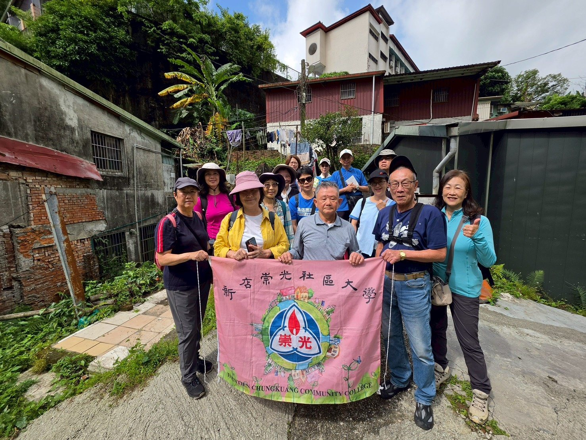
四、沿著路徑展開的地方記憶
集合與開場
學員於北宜路一段 108 號準時報到集合。
由帶路指導翁先生與居住於國校里的啟川大哥口述，正式展開「明治煤礦與新店老街」走讀踏查。
第一階段：礦業遺址與交通地景變遷
景點一：明治煤礦遺址與老闆舊居
現今馬路旁曾是明治煤礦老闆兼具辦公室與住家功能的建築，三間雙面倒水的平房，這區塊叫頂城。（亦為某中學創校董事居所，這指的是劉明）。翁東源父親民國25年來此，民國39年明治關門後去安坑錦繡，劉明並沒有經營過明治。
因後來馬路拓寬，目前建築為重建過的樣貌。
景點二：天車（捲揚機）與斜坡地貌
新店早期礦坑多為斜坡設計，運煤時仰賴「天車」（捲揚機）大型馬達設備，將裝滿煤炭的台車沿斜坡軌道拉出坑口。（站立地方有拱橋，有輕便路）
台灣保留最完整的萬芳煤礦捲揚機，已被移至南僑觀光工廠展示（此說法待進一步查證）。
學員在斜坡依高低落差站位拍攝大合照，此處為昔日運煤動線的重要地景，地形與斜度仍可辨識。
屠宰場現已蓋起房子每年約12／23後開始大殺。
景點三：輕便路與王家包子店（物資收發處）
隊伍沿昔日供輕便車行駛的「輕便路」踏勘，此路線為明治煤礦專屬斜坡輕便路，用於運送礦產與物料。
隨地貌變遷與道路拓寬，昔日較低窪的軌道路線多被加蓋或填平為地下排水道；有工人在挖下水道時，曾發現底下的空洞與水溝（口述，待查證）。
現今「王家包子店」附近曾是重要出入管制收發處，人員進出或攜帶物資皆須登記報備，其下方同時為昔日（大坪林圳）水溝出口。
第二階段：街區演變、特色建築與聚落記憶
景點四：論華火柴工廠與舊公部門遺址
現今 7-11 與滷肉飯下方的四間店面處，曾是張文華二老闆開設的「論華火柴工廠」（口述名稱，具體資金與規模仍待查證）。
昔日新店街的舊市鎮中心、文山派出所、消防隊、舊屠宰場及碧光照相館皆位於此一帶。
景點五：馬偕教會與廣明路更名
途經後街的馬偕教會（新店教會）擁有悠久歷史，為日治（清朝1874）時期以來在地重要的宗教場所，現今外觀雖歷經重建，仍維持相當規模。
現今「北宜路」與「光明街」在最早期被統一稱作「廣明路」或「廣明街」，此道路名稱變遷為在地口述集體記憶，精確分段與年份待查。
景點六：日治宿舍群與羅東檜木門窗
國校路 65 號附近為日治時期新店國小保留下來的校長與教職員木造宿舍，屬較少見的在地日治木造宿舍群。
新店早期許多精美建築（如外牆貼綠磁磚的綠色大樓、舊新店診所等），其檜木門窗皆特地聘請來自羅東的木工師傅製作（口述，待查）。
景點七：摩天嶺、開天宮與土地產權共業
從開天宮往上走的一段陡坡被在地人稱為「摩天嶺」，許多房子依山坡高低落差而建，形成特殊的聚落景觀。
開天宮當年為「先斬後奏」建於國有地上，土地產權與宗教用地的釐清仍為地方歷史議題（細節需進一步查證）。
許多礦工後代（提及賴清德老家為例）因日治時期未登記土地，國民政府來台後，世居的家園變成無產權的國有地（口述，待查相關法律文件與地籍資料）。
景點八：山林管理所與新店教育榮景
日治時期的舊衛生所在被稱為「山林管理所」，遺址約在現今光明街上國泰相關大樓處（此名稱與位址仍需進一步查證）。
早期新店教育素質極佳，萬華區的學童甚至越區就讀新店國小或文山中學（在地口述回憶）。
當時的五峰國中早期曾被視為「北一女」的分校（此說法高度具體，建議查閱校史資料與官方文件以進一步查證）。
五、老師的話：淑華老師的總結與指導
1. 鼓勵「認養」主題，由點向外延伸文史
淑華老師在室內課堂上對本次田調進行全面梳理與指導，未來報告的產出方向為「由點向外延伸」的文史故事。
老師請學員提出各自的看法，並鼓勵大家「認養」特定的街道或主題，例如：國校路、新店路、輕便路或舊屠宰場等。
建議以一個「基準點」為核心（如新店路上的老餐廳或舊宿舍），將周遭歷史與環境落差一併寫進去，向外延伸出整體的在地文史故事。
2. 核心任務：錄音檔整理與產出「在地故事」
雖然課程時間僅有六週，無法做出極度完整的報告，但「最基本的工作一定要做」——儲存與建立田調檔案。
學員需將訪談錄音整理成重點文字，並以「在地故事」為最終產出目標。
故事可朝「200 到 300 字的在地小故事」為範圍，未來可存檔於社區大學，或發布於社群平台，甚至能與在地里長結合，作為未來舉辦地方導覽活動的應用素材。
3. 傳授實用田調訪談心法，建立地方信任
表明身分與目的：主動表明自己是社區大學的一員，是真心為了建立地方文史資料而來訪談，讓受訪長輩明白這是一份認真而善意的田調工作。
承諾隱私與正向報導：務必向長輩保證「發表前一定會經過您的同意」，且「絕不寫負面內容」，藉此卸下長輩的心防。
必問基本資訊：在聊得熱絡時，務必記得詢問長輩的「姓名、出生年份與聯絡電話」，以便日後需要補充資料時能隨時查證。
老師總結
這些訪談心法是「在地故事」能夠順利產出的關鍵，建議學員在後續兩週走讀中積極實踐與記錄。
現場影像
陽光下的路線，也把記憶照亮
照片裡有路邊的界石、坡道旁的石砌牆、老街騎樓下的停步聆聽，也有從高處望向新店溪的開闊水色。這些影像讓 5 月 7 日的田調不只留在文字裡，也讓後來閱讀的人，看見大家當時如何在現場一步步尋找線索。
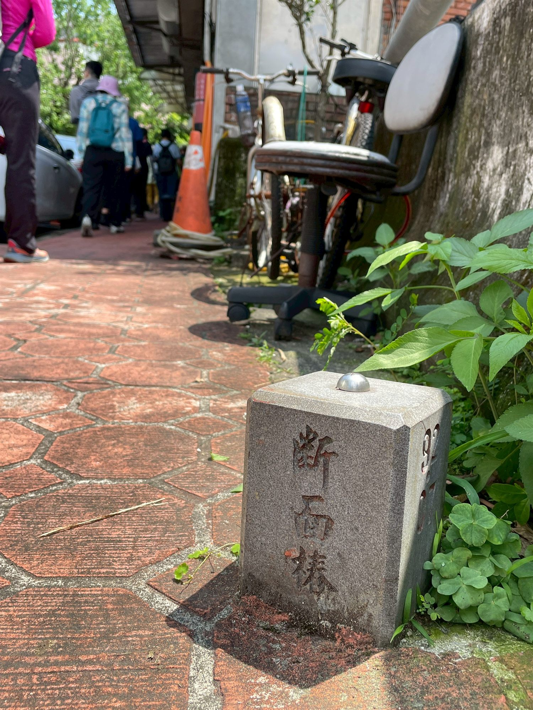
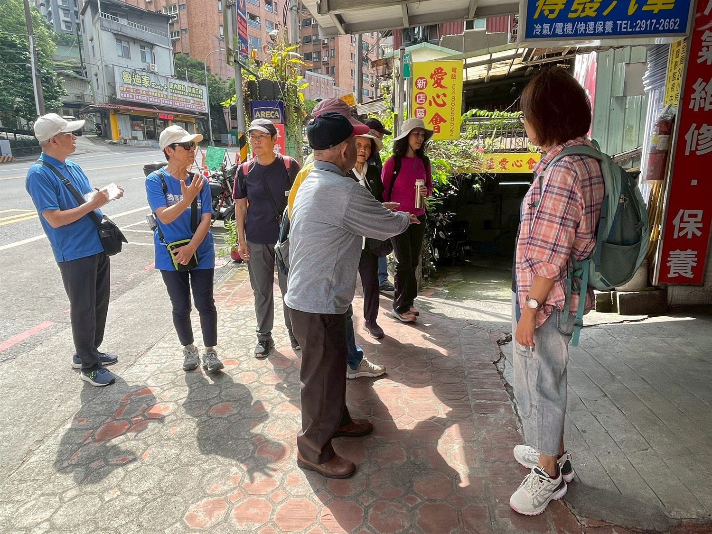
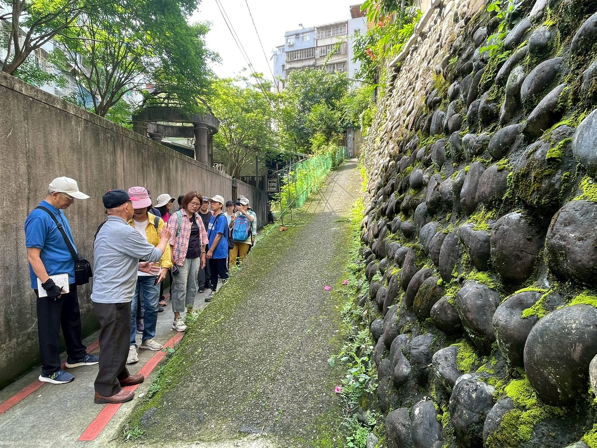
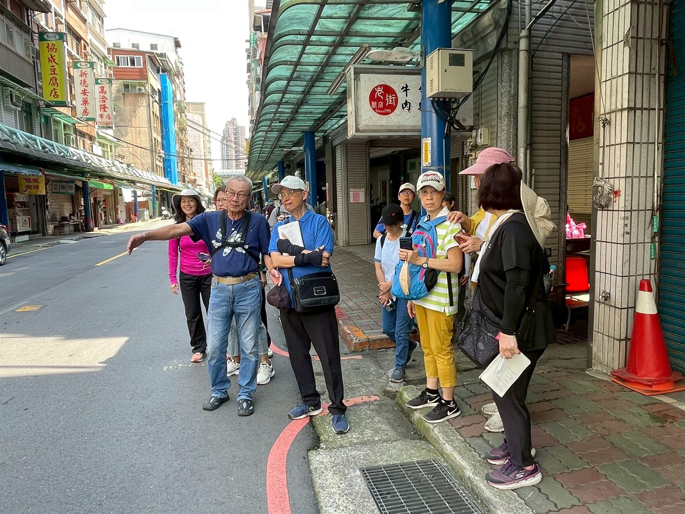
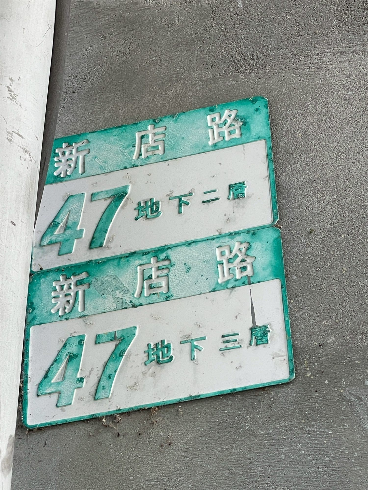
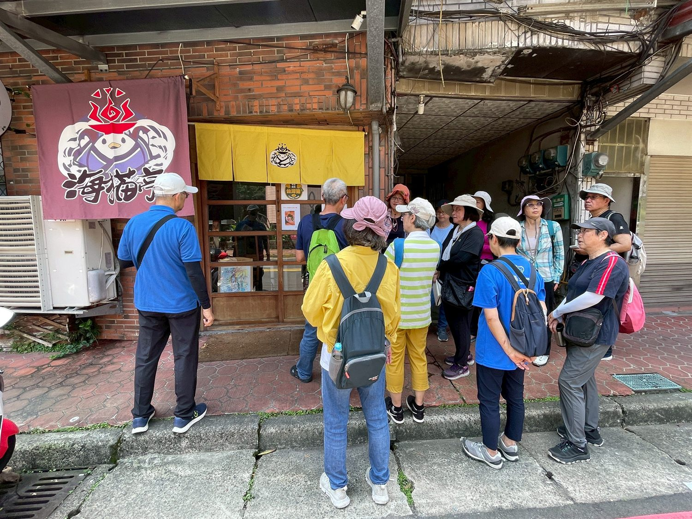
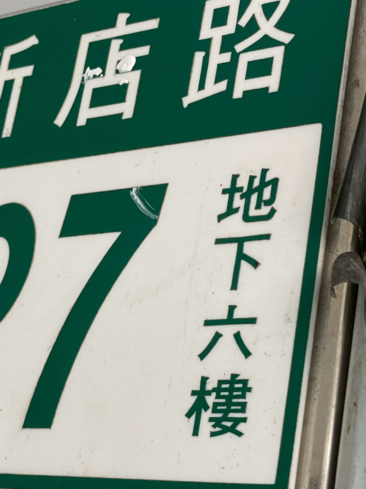
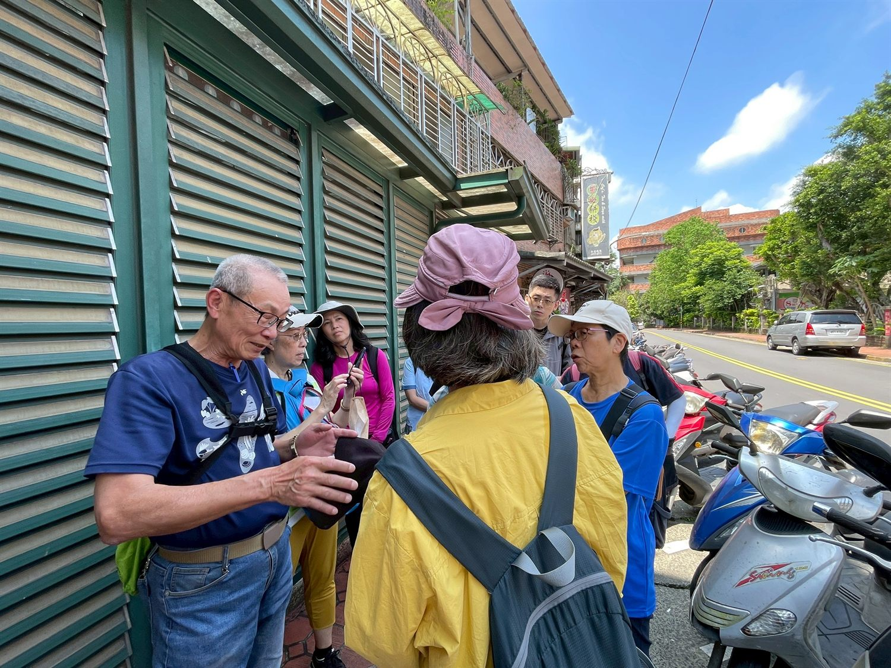
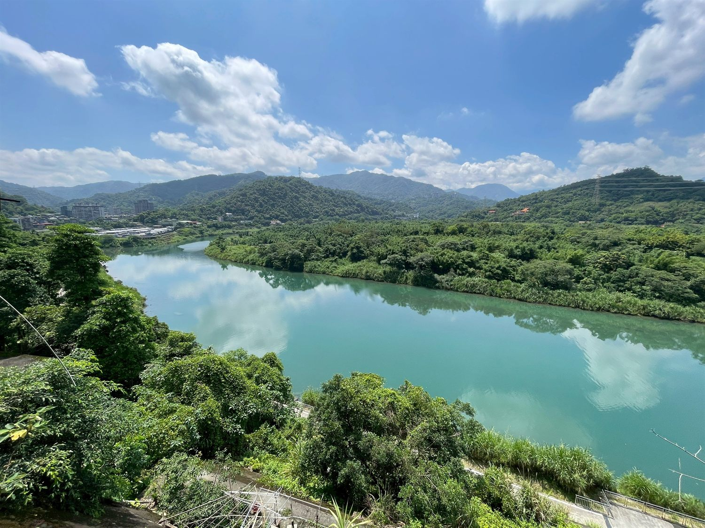
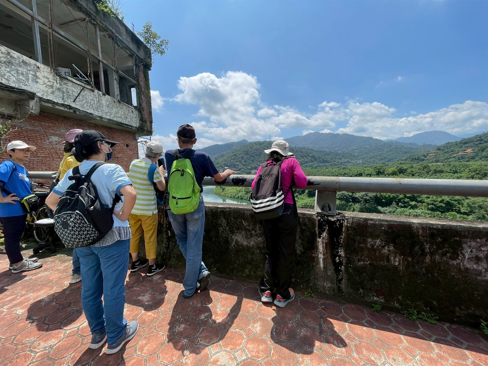